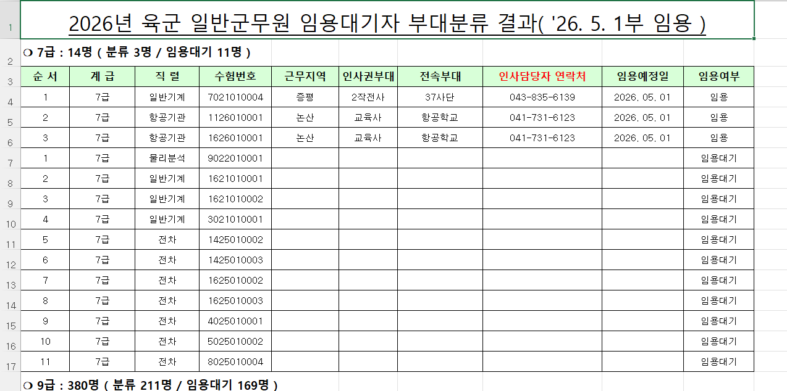

원본 자료 캡처 예시
아래 이미지는 실제 원본 자료 일부 화면입니다. 임용대기자 행에서는 근무지역, 인사권부대, 전속부대, 인사담당자 연락처, 임용예정일 등이 공란으로 남아 있는 사례를 확인할 수 있습니다.

※ 위 예시는 원본 자료 일부 캡처본이며, 공란 데이터가 원본부터 존재할 수 있음을 보여주기 위한 참고 화면입니다.
자주 묻는 질문
Q1. 왜 어떤 행은 근무지역, 부대, 연락처, 임용예정일이 비어 있나요?
사이트 오류라기보다, 원본 자료 자체에 해당 항목이 공란으로 공개된 경우가 있습니다.
특히 임용대기 상태 자료에서는 근무지역, 인사권부대, 전속부대, 인사담당자 연락처, 임용예정일 등이 원본부터 비어 있는 사례가 확인됩니다.
Q2. 왜 인원수는 있는데 상세 배정 정보는 안 보이나요?
원본 문서에는 인원 존재 여부만 표시되고, 실제 배정 세부항목은 비어 있는 경우가 있습니다.
따라서 통계상 인원은 집계되더라도, 지역·부대 분석에서는 일부 항목이 공란으로 남을 수 있습니다.
Q3. 이 사이트가 누락된 값을 임의로 채운 건가요?
예. 임용예정일만 공란이면 채웠습니다. 다만, 근무지역, 부대 등은 원본 자료에 공란이 존재하면 그대로 반영했습니다.
Q4. 믿어도 되는 사이트인가요?
개인이 정리한 참고용 사이트이므로, 최종 판단은 반드시 원문 자료와 함께 확인하는 것을 권장합니다.
최대한 오류를 줄이려 했지만 아래와 같은 이유로 오차 가능성이 있습니다.
- N차 분류 로직 해석 과정에서 오류가 발생할 수 있습니다.
- 국방부 및 각 군 원본 자료 자체에 미입력 데이터가 있을 수 있습니다.
- 엑셀 정리 과정이나 수기 검토 과정에서 일부 오차가 생길 수 있습니다.
Q5. 연막인가요?
- 특정 부대를 의도적으로 몰아넣거나 왜곡하려는 목적은 없습니다.
- 찜찜하다면 원문 게시판 자료를 직접 함께 확인해 보는 것을 권장합니다.
- 통신 연막친다고 인제에 +100명 배정하거나 유치한 짓 안합니다.
- 육통이 본인은 올해 수도권 몇명인지 모릅니다.
- 여건이 된다면 2026-2차, 3차, 2027~ 계속 업데이트 하겠습니다.